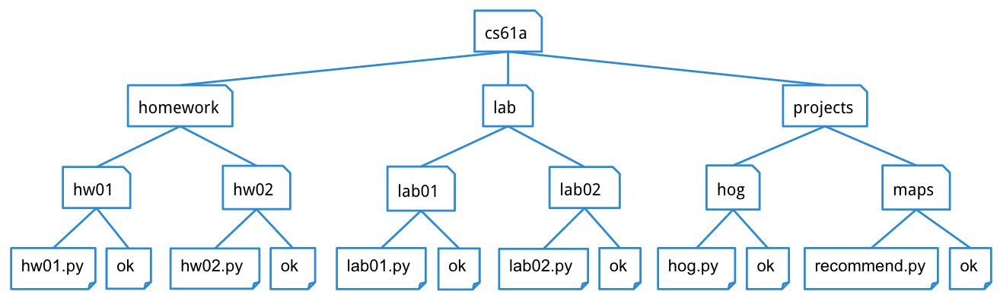

Lab 5: Mutable Sequences and Trees
Due at 11:59pm on Friday, 02/23/2018.
Starter Files
Download lab05.zip. Inside the archive, you will find starter files for the questions in this lab, along with a copy of the Ok autograder.
Submission
By the end of this lab, you should have submitted the lab with
python3 ok --submit. You may submit more than once before the
deadline; only the final submission will be graded.
Check that you have successfully submitted your code on
okpy.org.
- Questions 1 through 4 must be completed in order to receive credit for this lab. Starter code for coding questions is in lab05.py.
- Questions 5 through 9 are optional. It is recommended that you complete these problems on your own time. Starter code for these questions is in lab05_extra.py.
Topics
Consult this section if you need a refresher on the material for this lab. It's okay to skip directly to the questions and refer back here should you get stuck.
Sequences
Sequences are ordered collections of values that support element-selection and have length. The most common sequence you've worked with are lists, but many other Python types are sequences as well, including strings.
For Statements
We've learned about one method of iteration already -- while statements, which repeats code based on a conditional expression. It is also possible to iterate through a sequence and repeat code for each element in the sequence. This is done with a for statement, which has the following syntax:
for <name> in <expression>:
<suite>First, <expression> is evaluated. It must evaluate to a sequence, or else an
error will be produced. Then, for each element in the sequence in order,
<name>is bound to its value.<suite>is executed.
Here is an example where <expression> list expression:
for x in [-1, 4, 2, 0, 5]:
print("Current elem:", x)This would output the following:
Current elem: -1
Current elem: 4
Current elem: 2
Current elem: 0
Current elem: 5Dictionaries
Dictionaries are unordered sets of key-value pairs. Keys can only be immutable types (strings, numbers, tuples), but their corresponding value can be anything! To create a dictionary, use the following syntax:
>>> singers = { 'Adele': 'Hello', 1975: 'Chocolate', 'The Weeknd': ['The Hills', 'Earned It'] }The curly braces denote the key-value pairs in your dictionary. Each key-value pair is separated by a comma. For each pair, the key appears to the left of the colon and the value appears to the right of the colon. Note keys/values do not all have to be the same type, as you can see we have strings, integers and lists! Each key only appears once in a dictionary. You can retrieve values from your dictionary by "indexing" using the key:
>>> singers[1975]
'Chocolate'
>>> songs = singers['The Weeknd']
>>> songs[0]
'The Hills'You can add an entry or update an entry for an existing key in the dictionary using the following syntax.
Note they are identical syntax, so be careful! You might end updating (and overwriting an old value) even if you intended to add, and vice versa.
>>> singers['Adele'] = 'Rolling in the Deep'
>>> singers['Adele']
'Rolling in the Deep'
>>> singers['Kanye West'] = 'Real Friends' # New entry!
>>> singers['Kanye West']
'Real Friends'You can also check for membership of keys!
>>> 'Adele' in singers
TrueFinally, here are some useful dictionary functions:
dict.keys()will return a sequence of keys.>>> list(singers.keys()) # We use list() to turn the sequence into a list [1975, 'The Weeknd', 'Adele']dict.values()will return a sequence of values.>>> list(singers.values()) ['Chocolate', ['The Hills', 'Earned It'], 'Hello']dict.items()will return a sequence of key-value pairs.>>> list(singers.items()) [(1975, 'Chocolate'), ('The Weeknd', ['The Hills', 'Earned It']), ('Adele', 'Hello')]
Trees
A tree is a data structure that represents a hierarchy of information. A file system is a good example of a tree structure. For example, within your cs61a folder, you have folders separating your projects, lab assignments, and homework. The next level is folders that separate different assignments, hw01, lab01, hog, etc., and inside those are the files themselves, including the starter files and ok. Below is an incomplete diagram of what your cs61a directory might look like.

As you can see, unlike trees in nature, the tree abstract data type is drawn with the root at the top and the leaves at the bottom.
Some tree terminology:
- root: the node at the top of the tree
- label: the value in a node; the label of the root is selected by the
labelfunction - branches: a list of trees directly under the tree's root, selected by the
branchesfunction - leaf: a tree with zero branches
- node: any location within the tree (e.g., root node, leaf nodes, etc.)
Our tree abstract data type consists of a root and a list of its
branches. To create a tree and access its root value and branches, use the
following constructor and selectors:
Constructor
tree(label, branches=[]): creates a tree object with the givenlabelvalue at its root node and list ofbranches.
Selectors
label(tree): returns the value in the root node oftree.branches(tree): returns the list of branches of the giventree.
Convenience function
is_leaf(tree): returnsTrueiftree's list ofbranchesis empty, andFalseotherwise.
For example, the tree generated by
t = tree(1,
[tree(2),
tree(3,
[tree(4),
tree(5)]),
tree(6,
[tree(7)])])would look like this:
1
/ | \
2 3 6
/ \ \
4 5 7To extract the number 3 from this tree, which is the label of the root of its second branch, we would do this:
label(branches(t)[1])The print_tree function prints out a tree in a
human-readable form. The exact form follows the pattern illustrated
above, where the root is unindented, and each of its branches is
indented one level further.
def print_tree(t, indent=0):
"""Print a representation of this tree in which each node is
indented by two spaces times its depth from the root.
>>> print_tree(tree(1))
1
>>> print_tree(tree(1, [tree(2)]))
1
2
>>> numbers = tree(1, [tree(2), tree(3, [tree(4), tree(5)]), tree(6, [tree(7)])])
>>> print_tree(numbers)
1
2
3
4
5
6
7
"""
print(' ' * indent + str(label(t)))
for b in branches(t):
print_tree(b, indent + 1)Required Questions
What Would Python Display?
Q1: Dictionaries
What would Python display? Type it in the intepreter if you're stuck!
python3 ok -q dicts -u
>>> pokemon = {'pikachu': 25, 'dragonair': 148, 'mew': 151}
>>> pokemon['pikachu']
______25
>>> len(pokemon)
______3
>>> pokemon['jolteon'] = 135
>>> pokemon['mew'] = 25
>>> len(pokemon)
______4
>>> 'mewtwo' in pokemon
______False
>>> 'pikachu' in pokemon
______True
>>> 25 in pokemon
______False
>>> 148 in pokemon.values()
______True
>>> 151 in pokemon.keys()
______False
>>> 'mew' in pokemon.keys()
______True
>>> pokemon['ditto'] = pokemon['jolteon']
>>> pokemon['ditto']
______135>>> letters = {'a': 1, 'b': 2, 'c': 3}
>>> 'a' in letters
______True
>>> 2 in letters
______False
>>> sorted(list(letters.keys()))
______['a', 'b', 'c']
>>> sorted(list(letters.items()))
______[('a', 1), ('b', 2), ('c', 3)]>>> food = {'bulgogi': 10, 'falafel': 4, 'ceviche': 7}
>>> food['ultimate'] = food['bulgogi'] + food['ceviche']
>>> food['ultimate']
______17
>>> len(food)
______4
>>> food['ultimate'] += food['falafel']
>>> food['ultimate']
______21
>>> food['bulgogi'] = food['falafel']
>>> len(food)
______4
>>> 'gogi' in food
______FalseCoding Practice
Q2: Map, Filter, Reduce
As an exercise, implement three functions map, filter, and reduce.
map takes in a one argument function fn and a sequence seq and returns a
list containing fn applied to each element in seq.
filter takes in a predicate function pred and a sequence seq and returns a
list containing all elements in seq for which pred returns True.
reduce takes in a two argument function combiner and a non-empty sequence
seq and combines the elements in seq into one value using combiner.
def map(fn, seq):
"""Applies fn onto each element in seq and returns a list.
>>> map(lambda x: x*x, [1, 2, 3])
[1, 4, 9]
"""
"*** YOUR CODE HERE ***"
result = []
for elem in seq:
result += [fn(elem)]
return result
def filter(pred, seq):
"""Keeps elements in seq only if they satisfy pred.
>>> filter(lambda x: x % 2 == 0, [1, 2, 3, 4])
[2, 4]
"""
"*** YOUR CODE HERE ***"
result = []
for elem in seq:
if pred(elem):
result += [elem]
return result
def reduce(combiner, seq):
"""Combines elements in seq using combiner.
>>> reduce(lambda x, y: x + y, [1, 2, 3, 4])
10
>>> reduce(lambda x, y: x * y, [1, 2, 3, 4])
24
>>> reduce(lambda x, y: x * y, [4])
4
"""
"*** YOUR CODE HERE ***"
total = seq[0]
for elem in seq[1:]:
total = combiner(total, elem)
return totalUse Ok to test your code:
python3 ok -q map
python3 ok -q filter
python3 ok -q reduceQ3: Acorn Finder
The squirrels on campus need your help! There are a lot of trees on campus and
the squirrels would like to know which ones contain acorns. Define the function
acorn_finder, which takes in a tree and returns True if the tree contains a
node with the value 'acorn' and False otherwise.
def acorn_finder(t):
"""Returns True if t contains a node with the value 'acorn' and
False otherwise.
>>> scrat = tree('acorn')
>>> acorn_finder(scrat)
True
>>> sproul = tree('roots', [tree('branch1', [tree('leaf'), tree('acorn')]), tree('branch2')])
>>> acorn_finder(sproul)
True
>>> numbers = tree(1, [tree(2), tree(3, [tree(4), tree(5)]), tree(6, [tree(7)])])
>>> acorn_finder(numbers)
False
"""
"*** YOUR CODE HERE ***"
if label(t) == 'acorn':
return True
for b in branches(t):
if acorn_finder(b):
return True
return False
# Alternative solution
def acorn_finder(t):
if label(t) == 'acorn':
return True
return True in [acorn_finder(b) for b in branches(t)]Use Ok to test your code:
python3 ok -q acorn_finderQ4: Replace Leaf
Define replace_leaf, which takes a tree t, a value old, and a value new.
replace_leaf returns a new tree that's the same as t except that every leaf
value equal to old has been replaced with new.
def replace_leaf(t, old, new):
"""Returns a new tree where every leaf value equal to old has
been replaced with new.
>>> yggdrasil = tree('odin',
... [tree('balder',
... [tree('thor'),
... tree('loki')]),
... tree('frigg',
... [tree('thor')]),
... tree('thor',
... [tree('sif'),
... tree('thor')]),
... tree('thor')])
>>> laerad = copy_tree(yggdrasil) # copy yggdrasil for testing purposes
>>> print_tree(replace_leaf(yggdrasil, 'thor', 'freya'))
odin
balder
freya
loki
frigg
freya
thor
sif
freya
freya
>>> laerad == yggdrasil # Make sure original tree is unmodified
True
"""
"*** YOUR CODE HERE ***"
if is_leaf(t) and label(t) == old:
return tree(new)
else:
bs = [replace_leaf(b, old, new) for b in branches(t)]
return tree(label(t), bs)Use Ok to test your code:
python3 ok -q replace_leafOptional Questions
Shakespeare and Dictionaries
We will use dictionaries to approximate the entire works of Shakespeare! We're going to use a bigram language model. Here's the idea: We start with some word -- we'll use "The" as an example. Then we look through all of the texts of Shakespeare and for every instance of "The" we record the word that follows "The" and add it to a list, known as the successors of "The". Now suppose we've done this for every word Shakespeare has used, ever.
Let's go back to "The". Now, we randomly choose a word from this list, say "cat". Then we look up the successors of "cat" and randomly choose a word from that list, and we continue this process. This eventually will terminate in a period (".") and we will have generated a Shakespearean sentence!
The object that we'll be looking things up in is called a "successor table", although really it's just a dictionary. The keys in this dictionary are words, and the values are lists of successors to those words.
Q5: Successor Tables
Here's an incomplete definition of thebuild_successors_table
function. The input is a list of words (corresponding to a
Shakespearean text), and the output is a successors table. (By default,
the first word is a successor to "."). See the example below.
Note: there are two places where you need to write code, denoted by the two
"*** YOUR CODE HERE ***"
def build_successors_table(tokens):
"""Return a dictionary: keys are words; values are lists of successors.
>>> text = ['We', 'came', 'to', 'investigate', ',', 'catch', 'bad', 'guys', 'and', 'to', 'eat', 'pie', '.']
>>> table = build_successors_table(text)
>>> sorted(table)
[',', '.', 'We', 'and', 'bad', 'came', 'catch', 'eat', 'guys', 'investigate', 'pie', 'to']
>>> table['to']
['investigate', 'eat']
>>> table['pie']
['.']
>>> table['.']
['We']
"""
table = {}
prev = '.'
for word in tokens:
if prev not in table:
"*** YOUR CODE HERE ***"
table[prev] = [] "*** YOUR CODE HERE ***"
table[prev] += [word] prev = word
return tableUse Ok to test your code:
python3 ok -q build_successors_tableQ6: Construct the Sentence
Let's generate some sentences! Suppose we're given a starting word. We can look up this word in our table to find its list of successors, and then randomly select a word from this list to be the next word in the sentence. Then we just repeat until we reach some ending punctuation.
Hint: to randomly select from a list, import the Python random library with
import randomand use the expressionrandom.choice(my_list))
This might not be a bad time to play around with adding strings
together as well. Let's fill in the construct_sent function!
def construct_sent(word, table):
"""Prints a random sentence starting with word, sampling from
table.
>>> table = {'Wow': ['!'], 'Sentences': ['are'], 'are': ['cool'], 'cool': ['.']}
>>> construct_sent('Wow', table)
'Wow!'
>>> construct_sent('Sentences', table)
'Sentences are cool.'
"""
import random
result = ''
while word not in ['.', '!', '?']:
"*** YOUR CODE HERE ***"
result += word + ' '
word = random.choice(table[word]) return result.strip() + wordUse Ok to test your code:
python3 ok -q construct_sentPutting it all together
Great! Now let's try to run our functions with some actual data. The following snippet included in the skeleton code will return a list containing the words in all of the works of Shakespeare.
Warning: Do NOT try to print the return result of this function.
def shakespeare_tokens(path='shakespeare.txt', url='http://composingprograms.com/shakespeare.txt'):
"""Return the words of Shakespeare's plays as a list."""
import os
from urllib.request import urlopen
if os.path.exists(path):
return open('shakespeare.txt', encoding='ascii').read().split()
else:
shakespeare = urlopen(url)
return shakespeare.read().decode(encoding='ascii').split()Uncomment the following two lines to run the above function and build the successors table from those tokens.
# Uncomment the following two lines
# tokens = shakespeare_tokens()
# table = build_successors_table(tokens)Next, let's define a utility function that constructs sentences from this successors table:
>>> def sent():
... return construct_sent('The', table)
>>> sent()
" The plebeians have done us must be news-cramm'd ."
>>> sent()
" The ravish'd thee , with the mercy of beauty !"
>>> sent()
" The bird of Tunis , or two white and plucker down with better ; that's God's sake ."Notice that all the sentences start with the word "The". With a few
modications, we can make our sentences start with a random word. The
following random_sent function (defined in your starter file) will
do the trick:
def random_sent():
import random
return construct_sent(random.choice(table['.']), table)Go ahead and load your file into Python (be sure to use the -i flag).
You can now call the random_sent function to generate random
Shakespearean sentences!
>>> random_sent()
' Long live by thy name , then , Dost thou more angel , good Master Deep-vow , And tak'st more ado but following her , my sight Of speaking false !'
>>> random_sent()
' Yes , why blame him , as is as I shall find a case , That plays at the public weal or the ghost .'More Trees Practice
Q7: Pruning Leaves
Define a function prune_leaves that given a tree t and a tuple of values vals,
it produces a version of t with all its leaves that are in vals removed.
Do not attempt to try to remove non-leaf nodes and do not remove leaves that do not match any of the
items in vals. If you have to remove the root of a tree, return
None.
def prune_leaves(t, vals):
"""Return a modified copy of t with all leaves that have a label
that appears in vals removed. Return None if the entire tree is
pruned away.
>>> t = tree(2)
>>> print(prune_leaves(t, (1, 2)))
None
>>> numbers = tree(1, [tree(2), tree(3, [tree(4), tree(5)]), tree(6, [tree(7)])])
>>> print_tree(numbers)
1
2
3
4
5
6
7
>>> print_tree(prune_leaves(numbers, (3, 4, 6, 7)))
1
2
3
5
6
"""
"*** YOUR CODE HERE ***"
if is_leaf(t) and (label(t) in vals):
return None
new_branches = []
for b in branches(t):
new_branch = prune_leaves(b, vals)
if new_branch:
new_branches += [new_branch]
return tree(label(t), new_branches)Use Ok to test your code:
python3 ok -q prune_leavesQ8: Sprout leaves
Define a function sprout_leaves that, given a tree, t, and a list
of values, vals, and produces a tree with every leaf having new
branches that contain each of the items in vals. Do not add new
branches to non-leaf nodes.
def sprout_leaves(t, vals):
"""Sprout new leaves containing the data in vals at each leaf in
the original tree t and return the resulting tree.
>>> t1 = tree(1, [tree(2), tree(3)])
>>> print_tree(t1)
1
2
3
>>> new1 = sprout_leaves(t1, [4, 5])
>>> print_tree(new1)
1
2
4
5
3
4
5
>>> t2 = tree(1, [tree(2, [tree(3)])])
>>> print_tree(t2)
1
2
3
>>> new2 = sprout_leaves(t2, [6, 1, 2])
>>> print_tree(new2)
1
2
3
6
1
2
"""
"*** YOUR CODE HERE ***"
if is_leaf(t):
return tree(label(t), [tree(v) for v in vals])
return tree(label(t), [sprout_leaves(s, vals) for s in branches(t)])Use Ok to test your code:
python3 ok -q sprout_leavesQ9: Add trees
Define the function add_trees, which takes in two trees and returns a new
tree where each corresponding node from the first tree is added with the node
from the second tree. If a node at any particular position is present in one
tree but not the other, it should be present in the new tree as well.
Hint: You may want to use the built-in zip function to iterate over multiple sequences at once.
Note: If you feel that this one's a lot harder than the first two extra tree problems, that's totally fine! This is a pretty difficult problem, but you can do it! Talk about it with other students, and come back to it if you need to.
def add_trees(t1, t2):
"""
>>> numbers = tree(1,
... [tree(2,
... [tree(3),
... tree(4)]),
... tree(5,
... [tree(6,
... [tree(7)]),
... tree(8)])])
>>> print_tree(add_trees(numbers, numbers))
2
4
6
8
10
12
14
16
>>> print_tree(add_trees(tree(2), tree(3, [tree(4), tree(5)])))
5
4
5
>>> print_tree(add_trees(tree(2, [tree(3)]), tree(2, [tree(3), tree(4)])))
4
6
4
>>> print_tree(add_trees(tree(2, [tree(3, [tree(4), tree(5)])]), \
tree(2, [tree(3, [tree(4)]), tree(5)])))
4
6
8
5
5
"""
"*** YOUR CODE HERE ***"
if not t1:
return t2
if not t2:
return t1
new_label = label(t1) + label(t2)
t1_children, t2_children = branches(t1), branches(t2)
length_t1, length_t2 = len(t1_children), len(t2_children)
if length_t1 < length_t2:
t1_children += [None for _ in range(length_t1, length_t2)]
elif len(t1_children) > len(t2_children):
t2_children += [None for _ in range(length_t2, length_t1)]
return tree(new_label, [add_trees(child1, child2) for child1, child2 in zip(t1_children, t2_children)])Use Ok to test your code:
python3 ok -q add_trees